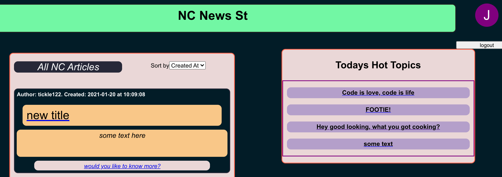
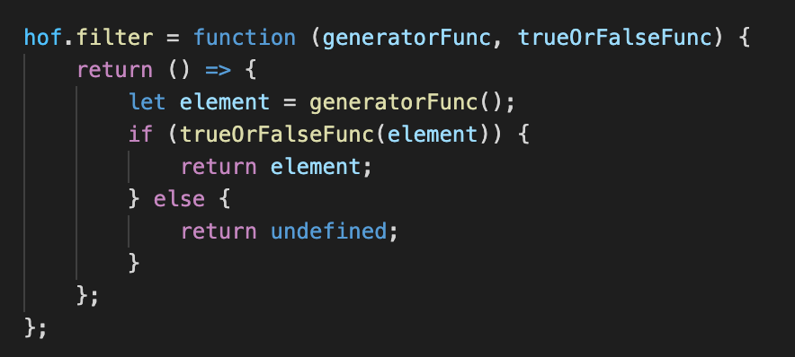
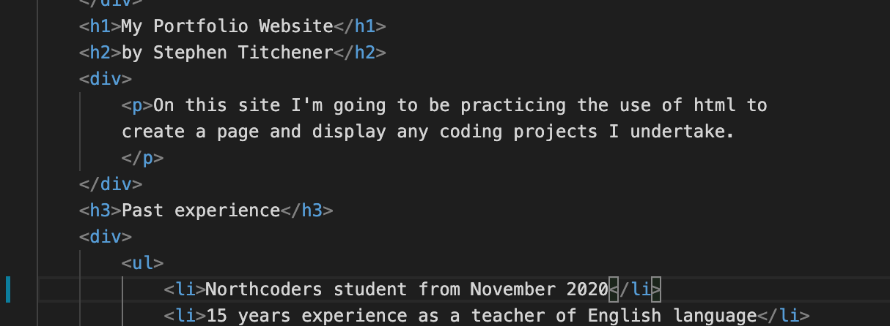

The links above will take you to the Frontend project completed as a React project as part of the Northcoders bootcamp program. Please take time to check the README file on the github project as this app is not complete, and still has bugs related to users logging in with custom usernames. The app itself makes use of the backend server also featured on this page.
Once the bootcamp is finished, I hope to take time to polish the user login and add additional features such as a search bar and the ability to post additional articles. For now though, feel free to browse the app and add comments to articles as you please.
Opening this link will take you to the api server homepage which will serve a json object. This object contains descriptions of the current endpoints available on this api. Over time these endpoints will be added to, and eventually will become the basis for a frontend website that accesses this api based on the type of request sent.
We're due to start work on the frontend for this project next week, so hopefully a completed app will appear here soon.

In the link above you'll find a game of Noughts and Crosses that I created using a mixture of HTML and JSX in React. Altought it's far from perfect, I'm incredibly proud of this as it's the first game I ever created and coded myself.
Getting all the inputs linked together using the state to contain the data, and including logic to determine the winner & update the scores was quite the challenge. I'm sure in future years I'll look back on this and realise a half dozen things I could have done better. But for now I'm happy to have it up and running.

In the link above you'll find a simple app that was created by myself and another Northcoder, Claire Castanet, working in a team together.
This app was created in order to practice accessing a public api and using the data received in a frontend app. Inside this app you are able to input start and finish years, allowing you to see the range of masses of meteors that fell during those years. The main challenge in creating this app was that the NASA documentation on how to query the api was pretty woeful. We had to research making SoQL requests to a Socratic Open Data Api (SODA) before we could get meaningful data back. Once we had the data though, this got placed into a react-chartjs2 component and rendered on the page successfully.

This particular page may not be all that much to look at. But everything displayed was written using nothing but the HTML Document Object Model (DOM). Nothing here uses React or any other framework, and it was a really enjoyable challenge to get everything working on screen using the recursive DOM. Obviously React is far quicker due to the virtual DOM, but still it was an eye opener to be able to see what's going on under the hood, something you normally only see if you put React code into programs like Babel.
Give it a try using the link above and see if you can get to the secret bonus page.

Meanwhile this link will take you to my github account page. As new projects are completed, this is where you can access the public git repositories. Once the Northcoders Web Development course finishes, I hope to start new projects to practice what I've learnt.
I'm especially proud of finishing the higher order functions katas. These really foxed me the first time we met them, but after a lot of hard work, I've more or less got my head around the concepts.
And this page that you're reading now is something that I started during the pre-course before joining Northcoders. I'm now coming back to it and adding content as it gets completed. Just maintaining this site is teaching me a lot about HTML elements and CSS styling, something we're taking forward in the next stage of the course as we learn about frontend frameworks like React.
